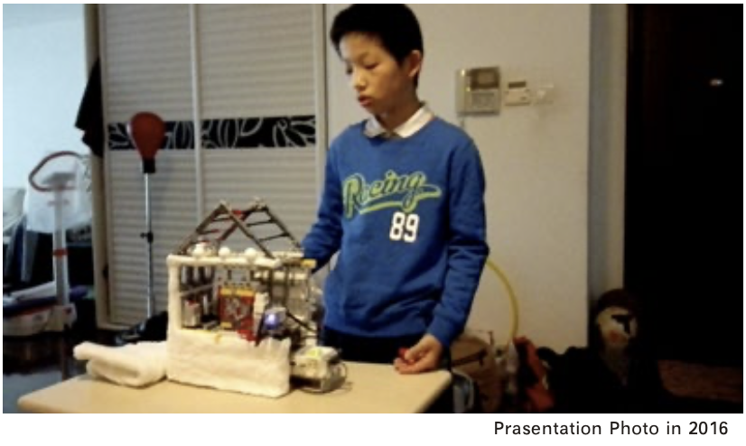
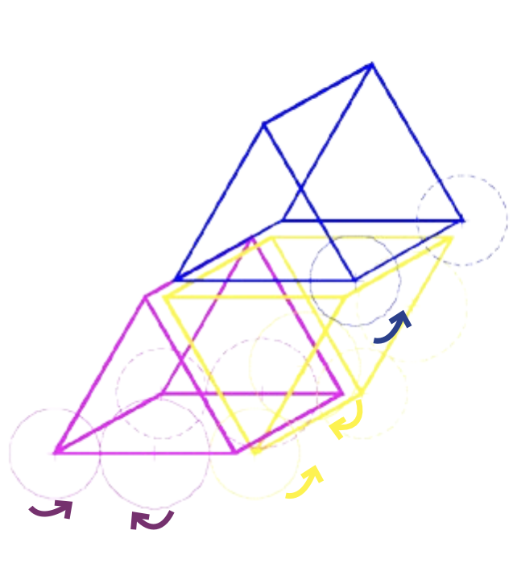
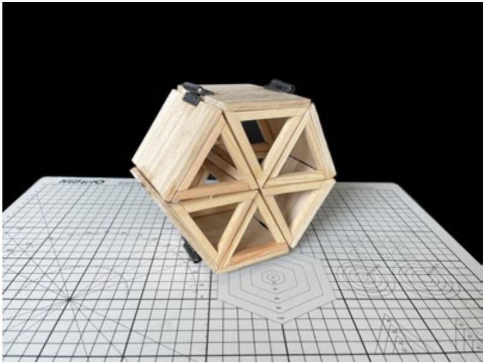
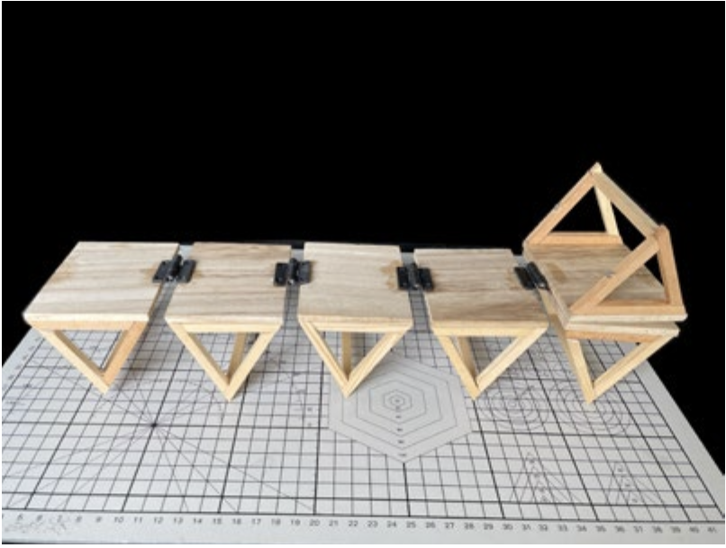

China is located in the Pacific Rim seismic belt, a region with frequent earthquake disasters. The most recent major earthquake occurred in Wenchuan in 2008. According to data from the China Earthquake Administration, the surface wave magnitude of the 5.12 Wenchuan earthquake was 8.0. The earthquake was felt in China from Inner Mongolia in the north, to Shanghai in the east, Tibet in the west, and Hong Kong and Taiwan in the south. Countries such as Thailand, Vietnam, the Philippines, and Japan outside of China also felt the tremor. The Wenchuan earthquake caused huge losses to life and property.
When I was in elementary school in 2016, I had the idea of building an anti-seismic house. Since my understanding of materials and engineering at the time were not mature enough, this design was very straightforward. These structures could to a large extent ensure that people have a safe shelter in the event of an earthquake, but when I think about it carefully, there are also many problems.
When I searched for information on the Internet, I learned many common methods for earthquake resistance in houses, including how the furniture will not fall down in the event of an earthquake, and how the metal desks in schools protect students. So, I combined these ideas and came up with a new one: to design anti-seismic furniture to protect people.

Of course, there are a lot more things I've done at that time :)
{kind=link}
{kind=link}
{kind=link}
{kind=link}
{kind=link}
{kind=link}
But ... Why Polygon?
What I envisioned at the beginning was a bed composed of three individual triangular prisms, which can be joined together to form a bigger one (See this design by clicking the right(below) image). The triangular prism is preferably an isosceles triangle with a long waist and a short base. In this way, the highest place can bear the greatest force thus protecting people hiding at the bottom. If the two end points of each side of the polygon are connected to its center, many triangles can still be formed, and the principle remains the same. Therefore, I assume that when the height of this polygon (the vertical distance from the center of the
polygon to the sides) is constant, through calculation we will have a formula: perimeter = (2 • Height • Number of sides)/(tan(90°(Number of sides-2)/Number of sides)). In this formula, under the assumption that the height is 0.8 meters, the perimeter will decrease as the number of sides increases.
As the polygon more resembles a circle, its motion becomes more flexible. Finally, after synthesizing various factors, I determined to build with the hexagonal structure. When an earthquake occurs, if a heavy object from an uncertain direction hits the polygon, it can move accordingly, canceling out the force.

How to start?
1. We can deform our anti-seismic bed manually: first put the whole bed upright and then roll it into a polygonal shape, and then put the whole bed back flat, and people get into the polygon for protection.
2. A gear is placed on one end of the edge on each triangular prism's bottom surface, so that the edge can rotate when the gear rotates. Only one motor is required to drive one of the gears, and then all gears can rotate. In this case, all edges rotate, and our bed is rolled up, completing the deformation. One detail that requires attention is that three gears are required between every two nodes, so that they can rotate in the same direction.
1. We can deform our anti-seismic bed manually: first put the whole bed upright and then roll it into a polygonal shape, and then put the whole bed back flat, and people get into the polygon for protection.
2. A gear is placed on one end of the edge on each triangular prism's bottom surface, so that the edge can rotate when the gear rotates. Only one motor is required to drive one of the gears, and then all gears can rotate. In this case, all edges rotate, and our bed is rolled up, completing the deformation. One detail that requires attention is that three gears are required between every two nodes, so that they can rotate in the same direction.
{kind=link}
Final Model
↓ Use this sliding block to see its regular(life) mode ↓
 